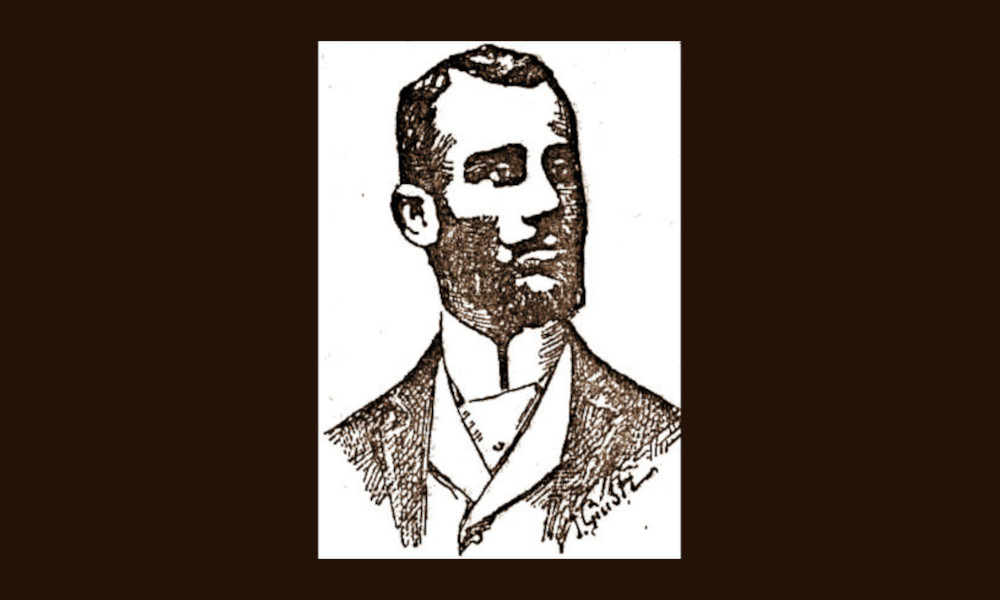

Lazzaroni
Roma, Parigi e Nizza, entità attiva dal 1892 al 1934

- PERSONA
- Michel Lazzaroni, 1863–1934, antiquario
- SEDI
- Viale di Tor di Quinto 58, Roma · 1892–1934
Rue Spontini 16, Parigi · 1895 ca.–1934
Rue de France 94, Nizza · 1900 ca.–1934 - IN CATALOGO
- Opere transitate, catalogo della Fondazione Zeri →
Michele Lazzaroni (1863-1934), singolare figura di marchand-amateur, nonché collezionista e restauratore, è stata approfondita negli ultimi anni dagli studi di Elisabetta Sambo e Loredana Lorizzo. Nato a Roma nel 1863, si formò come pittore alla scuola dell'artista sivigliano Francisco Peralta del Campo ma intraprese ben presto una carriera nel campo dell'alta finanza divenendo il direttore della Banca Romana. Nel 1893 uno grosso scandalo travolse l'istituto bancario portando Lazzaroni a una condanna, scontata anche con una breve detenzione. Egli si rivolse quindi al mondo dell'antiquariato iniziando ad acquisire e a vendere opere, in parte destinate alla sua collezione privata, in parte rimesse sul mercato.
Lazzaroni esercitò la sua attività presso le proprie abitazioni: a Roma, in una Villa fatta costruire nel 1892 nel quartiere di Tor di Quinto che probabilmente lui stesso contribuì a decorare; a Parigi in un palazzo al numero 16 di Rue Spontini; a Nizza a Villa Madeleine, eretta all'inizio del XX secolo.
Fin dai primi anni del 1900 prese contatti con i maggiori storici dell'arte dell'epoca, in particolare Adolfo Venturi e Bernard Berenson, che utilizzò come consulenti e mediatori. Corredate dai loro expertises, che egli chiedeva di vergare sul retro di fotografie che si faceva realizzare da ditte quali Braun & Cie, Giraudon e Bernès, Marouteau & C.ie, i dipinti esaminati venivano proposti a collezionisti o ad alti agenti, in particolare alla casa Duveen, che procedeva a piazzarli sul mercato, soprattutto americano. Qualora il pezzo antico non fosse di qualità ritenuta sufficiente, Lazzaroni provvedeva, di suo pugno o tramite restauratori conniventi, a 'migliorarne' l'apparenza estetica, intervenendo anche con pesanti ridipinture. Tra i professionisti con cui collaborò ci furono in particolare Louis Vergetas (1882-1961), detto 'Verzetta', e Luigi Cavenaghi. Con le sue operazioni trattò e commerciò centinaia di dipinti finendo per saturare musei e collezioni d'oltreoceano di opere molto ritoccate e al limite della falsificazione, che trasmettevano un'immagine alterata del Rinascimento, creata ad hoc per compiacere la clientela.
Lazzaroni morì nel 1934. La sua collezione personale, già oggetto di due diverse alienazioni nel 1894 in occasione di un'asta Corvisieri , e nel 1952 a Nizza, fu definitivamente dispersa in seguito a una vendita avvenuta nel 2003 a Roma. L'archivio fotografico fu ceduto dal figlio Edgardo allo Studio d'Arte Palma di Roma per tramite del restauratore Mario Modestini. Lì venne acquistato tra il 1946 e il 1949 da Federico Zeri che ne fece un nucleo importante della propria nascente fototeca.
Collaboratori
- Bernès, Marouteau & C.ie (fotografo)
- Braun & C.ie (fotografo)
- Giraudon (fotografo)
Bibliografia essenziale
- Domenico Corvisieri (1894), Catalogue de la riche collection d'armes du Moyen Age et de la Renaissance et de rares objets d'art anciens et modernes appartenant a la liquidation du patrimoine de le baron M. A. Lazzaroni, dont la vente aux encheres publiques aura lieu a Rome sous la direction de M. Dominique Corvisieri Rome Impr. Edit. Romana, 1894., Roma 1894.
- Lorizzo, L. (2015), Un falso Rinascimento?: 2. il barone Michele Lazzaroni e la scultura, In «Studiolo», 11, 2014, pp. 108-119, 301-302
- Lorizzo, L. (2018), L’arte di falsificare l’arte. Michele Lazzaroni e la Fototeca di Adolfo Venturi, in La fototeca di Adolfo Venturi alla Sapienza, catalogo della mostra, a cura di I. Schiaffini, Roma, pp. 85-94
- Sambo, E. (2014), «Braun & C.ie» nelle commissioni Lazzaroni, in I colori del bianco e nero: fotografie storiche nella Fototeca Zeri 1870 - 1920, a cura di Bacchi, A., Mambelli, F., Rossini, M., Sambo, E., Bologna, Fondazione Federico Zeri, pp. 133-138
- Sambo, E. (2015), Un falso Rinascimento?: 1. Michele Lazzaroni (1863-1934), tra contraffazione e restauro, In «Studiolo», 11, 2014, pp. 94-107, 301-302
- Terris, J. J. (1952), Catalogue des meubles et objets d'art anciens et modernes, très important tableaux ... très nombreuses sculptures ... provenant des collections des Barons Lazzaroni et garnissant la Villa Madeleine ... Nice : vente ... sur lieu ... lundi 16 ... samedi 21 juin 1952. [S.l. s.n.], 1952